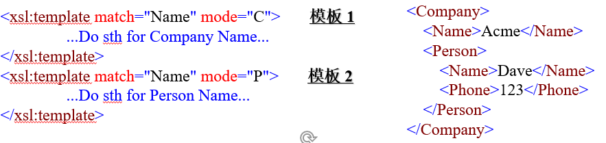
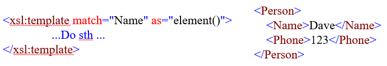
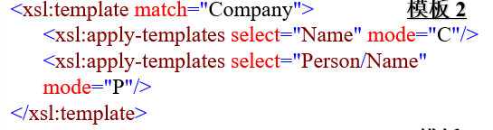
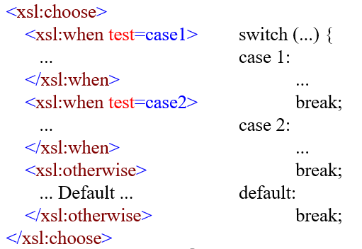
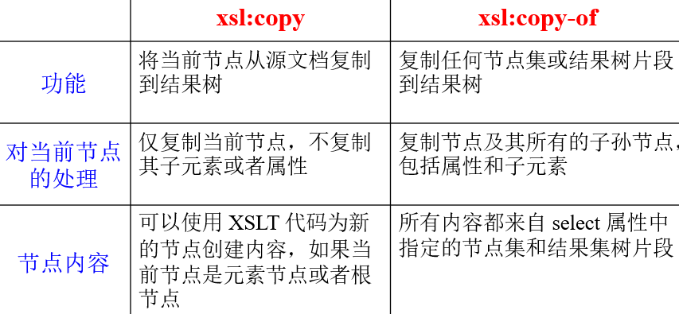
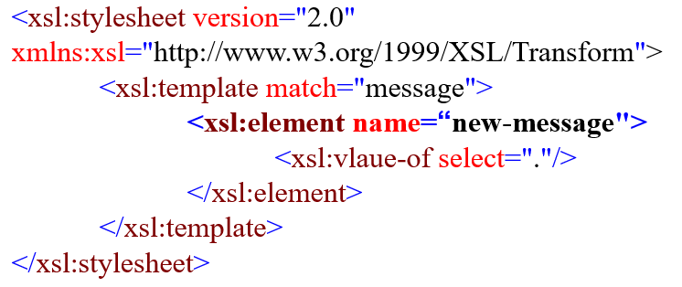
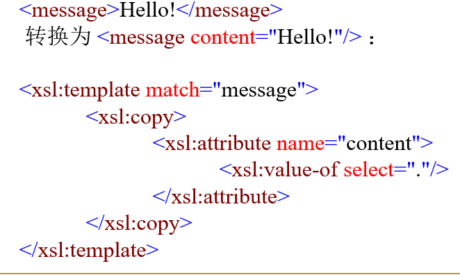
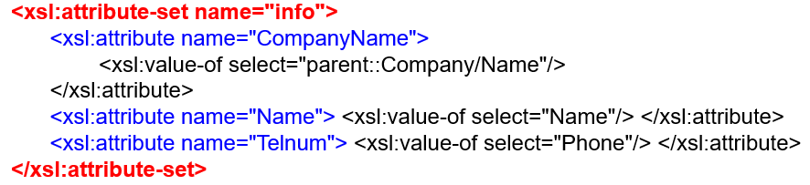

<!DOCTYPE html>


    <html lang="zh_CN">
    

            <head>
                <!-- hexo-inject:begin --><!-- hexo-inject:end --><meta charset="utf-8" />
                
                    
                                
                                        <meta name="description" content="My Utopia" />
                                        
                                            <meta name="viewport" content="width=device-width, initial-scale=1, maximum-scale=1" />
                                            <title>
                                                
                                                    XML开发技术——第五章 |
                                                        
                                                            My Utopia
                                            </title>
  <meta name="generator" content="hexo-theme-ayer">
                                            
                                                <link rel="shortcut icon" href="/favicon.ico" />
                                                
                                                    
<link rel="stylesheet" href="/dist/main.css">

                                                        
<link rel="stylesheet" href="https://cdn.jsdelivr.net/gh/Shen-Yu/cdn/css/remixicon.min.css">

                                                            
<link rel="stylesheet" href="/css/custom.css">

                                                                
                                                                    
<script src="https://cdn.jsdelivr.net/npm/pace-js@1.0.2/pace.min.js"></script><!-- hexo-inject:begin --><!-- hexo-inject:end -->

                                                                        
                                                                            

                                                                                

            </head>

        </html>

    <body>
        <!-- hexo-inject:begin --><!-- hexo-inject:end --><div id="app">
            
                    
                        <canvas class="fireworks" style="position: fixed;left: 0;top: 0;z-index: 1; pointer-events: none;"></canvas>
                        <script type="text/javascript" src="//cdn.bootcss.com/animejs/2.2.0/anime.min.js"></script>
                        <script type="text/javascript" src="/js/fireworks.js"></script>
                        
                            
                                    <main class="content on">
                                        <section class="outer">
    <article
  id="post-XML开发技术——第五章"
  class="article article-type-post"
  itemscope
  itemprop="blogPost"
  data-scroll-reveal
>
  <div class="article-inner">
    
    <header class="article-header">
       
<h1 class="article-title sea-center" style="border-left:0" itemprop="name">
  XML开发技术——第五章
</h1>
 

    </header>
     
    <div class="article-meta">
      <a href="/2020/11/25/XML%E5%BC%80%E5%8F%91%E6%8A%80%E6%9C%AF%E2%80%94%E2%80%94%E7%AC%AC%E4%BA%94%E7%AB%A0/" class="article-date">
  <time datetime="2020-11-25T12:25:55.000Z" itemprop="datePublished">2020-11-25</time>
</a> 
  <div class="article-category">
    <a class="article-category-link" href="/categories/%E5%AD%A6%E4%B9%A0%E7%AC%94%E8%AE%B0/">学习笔记</a>
  </div>
  
<div class="word_count">
    <span class="post-time">
        <span class="post-meta-item-icon">
            <i class="ri-quill-pen-line"></i>
            <span class="post-meta-item-text"> Word count:</span>
            <span class="post-count">3k</span>
        </span>
    </span>

    <span class="post-time">
        &nbsp; | &nbsp;
        <span class="post-meta-item-icon">
            <i class="ri-book-open-line"></i>
            <span class="post-meta-item-text"> Reading time≈</span>
            <span class="post-count">11 min</span>
        </span>
    </span>
</div>
 
    </div>
      
    <div class="tocbot"></div>


  
    <div class="article-entry" itemprop="articleBody">
       
  <p>经过了上一次的学习，我们学到了用于查询的XPATH，它会在之后的很多地方予以应用。</p>
<p>比如今天我们要讲的XSLT</p>
<a id="more"></a>

<h1 id="第五章-XSLT"><a href="#第五章-XSLT" class="headerlink" title="第五章 XSLT"></a>第五章 XSLT</h1><p>本章内容的学习目的：</p>
<ol>
<li>理解和掌握XML文档的转换过程。</li>
<li>学习如何使用XSLT中的模板实现XML文档的转换。</li>
<li>学习如何使用XSLT中的排序、循环、条件分支语句实现各种处理。</li>
<li>创建使用参数和变量的XSLT文档。</li>
</ol>
<h2 id="5-1-XSLT"><a href="#5-1-XSLT" class="headerlink" title="5.1 XSLT"></a>5.1 XSLT</h2><p>Q1：什么是XSLT？</p>
<p>C1：XSLT(e<strong>X</strong>tensible <strong>S</strong>tylesheet <strong>L</strong>anguage <strong>Transformations</strong>)，其中的T表示“转换”，它是一种专门用于对XML树型数据进行<strong>结构重组转换</strong>的有力工具，可以根据指定的<strong>转换规则</strong>（在XSLT中称之为模板）将一个XML文档树或者其中的部分内容转换为另一种文档树形式。</p>
<p>XSLT不仅局限于结构上的重组，它可以<strong>将XML文档转换为任何形式</strong>，包括XML、HTML和普通文本。</p>
<p>XSL是它的前身,本来包含了XML数据表达和数据转换。数据转换部分从中独立出来成为XSLT。剩下的数据表达部分成为XSL-FO</p>
<p>Q2：XSLT有什么注意事项？</p>
<p>C2：</p>
<ol>
<li>XSLT语言是一种声明性的语言，即XSLT程序本身<strong>只是包含了一些转换规则的XML文档。</strong></li>
<li>XSLT处理程序（或称之为执行引擎）将首先确定 XSLT规则，然后根据规则的<strong>匹配条件</strong>（<strong>通过XPath 表达式</strong>指定）、以及优先顺序完成相应的转换操作。</li>
<li><strong>XSLT本身也是一个XML文档</strong>，所以它必须严格遵守XML规范。其根元素的命名空间为<code>http://www.w3.org/1999/XSL/Transform</code> 即：</li>
</ol>
<p><code>&lt;xsl:stylesheet version=&quot;2.0&quot; xmlns:xsl=&quot;http://www.w3.org/1999/XSL/Transform&quot;&gt;</code></p>
<h3 id="5-1-1-XSLT的工作原理"><a href="#5-1-1-XSLT的工作原理" class="headerlink" title="5.1.1 XSLT的工作原理"></a>5.1.1 XSLT的工作原理</h3><p>Q3：XSLT是怎样工作的？</p>
<p>E3：</p>
<p>C3：</p>
<ol>
<li>在进行XSLT的转换任务时，需要<strong>两个输入文档</strong>，一个是包含源数据的<strong>XML文档</strong>，一个是包含转换任务规则的<strong>XSLT文档</strong>。</li>
<li>由XML解析器对这两个文档进行解析，将XML文档转换为所对应的文档树结构，<strong>将xslt(xsl)文档看作是一系列的转换规则</strong>。</li>
<li><strong>由XSLT引擎调用这些规则</strong>，对文档树进行遍历，分别处理其中指定的数据节点，将其转换为所需的结果集，并序列化为结果文档。</li>
</ol>
<h3 id="5-1-2-XSLT的一个简单示例"><a href="#5-1-2-XSLT的一个简单示例" class="headerlink" title="5.1.2 XSLT的一个简单示例"></a>5.1.2 XSLT的一个简单示例</h3><figure class="highlight html"><table><tr><td class="gutter"><pre><span class="line">1</span><br><span class="line">2</span><br><span class="line">3</span><br><span class="line">4</span><br><span class="line">5</span><br><span class="line">6</span><br><span class="line">7</span><br><span class="line">8</span><br><span class="line">9</span><br><span class="line">10</span><br><span class="line">11</span><br><span class="line">12</span><br><span class="line">13</span><br><span class="line">14</span><br><span class="line">15</span><br><span class="line">16</span><br><span class="line">17</span><br></pre></td><td class="code"><pre><span class="line"><span class="meta">&lt;?xml version=&quot;1.0&quot;?&gt;</span></span><br><span class="line"><span class="meta">&lt;?xml-stylesheet type=&quot;text/xsl&quot; href=&quot;hello.xlst&quot;?&gt;</span></span><br><span class="line"><span class="tag">&lt;<span class="name">message</span>&gt;</span>Hello!<span class="tag">&lt;/<span class="name">message</span>&gt;</span>       <span class="comment">&lt;!--这是hello.xsl文档--&gt;</span></span><br><span class="line"></span><br><span class="line"><span class="meta">&lt;?xml version=&quot;1.0&quot; encoding=&quot;UTF-8&quot;?&gt;</span></span><br><span class="line"><span class="tag">&lt;<span class="name">xsl:stylesheet</span> <span class="attr">version</span>=<span class="string">&quot;2.0&quot;</span> <span class="attr">xmlns:xsl</span>=<span class="string">&quot;http://www.w3.org/1999/XSL/Transform&quot;</span>&gt;</span></span><br><span class="line">        <span class="comment">&lt;!-- transform the input root (/) --&gt;</span></span><br><span class="line">        <span class="tag">&lt;<span class="name">xsl:template</span> <span class="attr">match</span>=<span class="string">&quot;/&quot;</span>&gt;</span></span><br><span class="line">			<span class="tag">&lt;<span class="name">html</span>&gt;</span> </span><br><span class="line">        		<span class="tag">&lt;<span class="name">body</span>&gt;</span> </span><br><span class="line">            		<span class="tag">&lt;<span class="name">h1</span>&gt;</span></span><br><span class="line">	        			<span class="tag">&lt;<span class="name">xsl:value-of</span> <span class="attr">select</span>=<span class="string">&quot;message&quot;</span>/&gt;</span></span><br><span class="line">					<span class="tag">&lt;/<span class="name">h1</span>&gt;</span> </span><br><span class="line">      			<span class="tag">&lt;/<span class="name">body</span>&gt;</span>    		</span><br><span class="line">			<span class="tag">&lt;/<span class="name">html</span>&gt;</span>       </span><br><span class="line">		<span class="tag">&lt;/<span class="name">xsl:template</span>&gt;</span></span><br><span class="line"><span class="tag">&lt;/<span class="name">xsl:stylesheet</span>&gt;</span>              <span class="comment">&lt;!--这是hello.xslt文档--&gt;</span></span><br></pre></td></tr></table></figure>


<h2 id="5-2-XSLT中模板的创建以及内置模板的使用"><a href="#5-2-XSLT中模板的创建以及内置模板的使用" class="headerlink" title="5.2 XSLT中模板的创建以及内置模板的使用"></a>5.2 XSLT中模板的创建以及内置模板的使用</h2><h3 id="5-2-1-XSLT中模板的声明"><a href="#5-2-1-XSLT中模板的声明" class="headerlink" title="5.2.1 XSLT中模板的声明"></a>5.2.1 XSLT中模板的声明</h3><p>Q4：怎么声明模板？</p>
<p>E4：</p>
<p>C4：模板标记之间的内容相当于一个<strong>函数的函数体</strong>，表示在调用该模板时应该执行的具体操作。而元素开始标记中的属性match、name、mode和priority则用于描述该模板的相关信息。</p>
<p>Q5：模板有哪些属性？</p>
<p>C5：</p>
<ol>
<li>匹配路径属性 match</li>
</ol>
<p>在XSLT中，模板的调用分为两种方式：</p>
<p><strong>●根据模板的匹配路径</strong>（在遍历的过程中）调用，具体又有两种情况：</p>
<p>i. 对于模板 xsl:template match=”/“，XSLT 处理器在碰到 XML 文档的文档节点时自动调用该模板，就好像作为<strong>程序执行的入口</strong>。</p>
<p>ii. 对于其他的模板match=other-pattern，将在模板xsl:template match=”/“的转换规则（函数体）中通过指出匹配路径的方式（使用xsl:apply-templates）进行隐式地或者显式地调用。</p>
<p>●<strong>根据模板名称属性</strong>，使用 xsl:call-template name=template-name  进行调用。 </p>
<ol start="2">
<li>名称属性 name</li>
</ol>
<p>模板&lt;xsl:template match=“/”&gt;和&lt;xsl:template match=“message”&gt;都没有具体的名称，因此将其称为<strong>无名模板</strong>。这些模板之所以没有名称，是因为<strong>它们的调用是在遍历文档树的过程中自动进行的</strong>，不需要名称。</p>
<p>也可以使用name属性为模板指定一个名称，使其成为命名模板 。例</p>
<figure class="highlight html"><table><tr><td class="gutter"><pre><span class="line">1</span><br><span class="line">2</span><br><span class="line">3</span><br><span class="line">4</span><br><span class="line">5</span><br><span class="line">6</span><br><span class="line">7</span><br><span class="line">8</span><br><span class="line">9</span><br></pre></td><td class="code"><pre><span class="line"><span class="tag">&lt;<span class="name">xsl:stylesheet</span> <span class="attr">version</span>=<span class="string">&quot;2.0&quot;</span> <span class="attr">xmlns:xsl</span>=<span class="string">&quot;http://www.w3.org/1999/XSL/Transform&quot;</span>&gt;</span></span><br><span class="line">    <span class="tag">&lt;<span class="name">xsl:template</span> <span class="attr">match</span>=<span class="string">&quot;/&quot;</span> <span class="attr">name</span>=<span class="string">&quot;one&quot;</span>&gt;</span>              <span class="comment">&lt;!--命名模板 one--&gt;</span></span><br><span class="line">        <span class="tag">&lt;<span class="name">xsl:call-template</span> <span class="attr">name</span>=<span class="string">&quot;another&quot;</span>/&gt;</span></span><br><span class="line">    <span class="tag">&lt;/<span class="name">xsl:template</span>&gt;</span></span><br><span class="line">    </span><br><span class="line">    <span class="tag">&lt;<span class="name">xsl:template</span> <span class="attr">name</span>=<span class="string">&quot;another&quot;</span>&gt;</span>                    <span class="comment">&lt;!--命名模板 another--&gt;</span></span><br><span class="line">        <span class="tag">&lt;<span class="name">output</span>&gt;</span>Simple output<span class="tag">&lt;/<span class="name">output</span>&gt;</span></span><br><span class="line">    <span class="tag">&lt;/<span class="name">xsl:template</span>&gt;</span></span><br><span class="line"><span class="tag">&lt;/<span class="name">xsl:stylesheet</span>&gt;</span></span><br></pre></td></tr></table></figure>

<p>XSLT 处理器将调用命名模板 one（实际上名称 one 没有作用，因为是自动调用的），然后<strong>在模板 one 中使用 xsl:call-template 直接调用名为 another 的模板</strong>，在模板 another 执行结束之后，继续执行模板 one 的后续指令，<strong>这个过程非常类似于函数的调用</strong>。 </p>
<ol start="3">
<li>模式属性 mode</li>
</ol>
<p></p>
<ol start="4">
<li>优先级属性 priority</li>
</ol>
<p></p>
<p>注意：XSLT中<strong>允许存在同名的模板</strong>；</p>
<p>当没有priority属性时，将执行<strong>后声明的模板</strong>；</p>
<p>有priority属性时，将使用 <strong>priority取值较大</strong>的模板。 </p>
<ol start="5">
<li>返回类型属性 as</li>
</ol>
<p>模板返回类型属性as的取值，表示<strong>该模板应该返回的数据类型</strong>。</p>
<p></p>
<p>注：该返回的XML元素<strong>包含了子元素和文本内容</strong>。</p>
<p>模板的返回类型属性<strong>as是一个可选的参数</strong>，如果不指定该参数，则模块可以<strong>输出任意的文本内容</strong>。</p>
<h3 id="5-2-1-XSLT中模板的调用"><a href="#5-2-1-XSLT中模板的调用" class="headerlink" title="5.2.1 XSLT中模板的调用"></a>5.2.1 XSLT中模板的调用</h3><h4 id="1-使用xsl-apply-templates-调用模板"><a href="#1-使用xsl-apply-templates-调用模板" class="headerlink" title="1.使用xsl:apply-templates 调用模板"></a>1.使用xsl:apply-templates 调用模板</h4><p>调用顺序：在<strong>广度优先</strong>、逐层向下的遍历过程中，指定继续遍历<strong>当前节点的所有子节点</strong></p>
<p>完整语法：</p>
<figure class="highlight css"><table><tr><td class="gutter"><pre><span class="line">1</span><br><span class="line">2</span><br><span class="line">3</span><br><span class="line">4</span><br></pre></td><td class="code"><pre><span class="line">&lt;xsl:apply-templates select=Expression mode=QName&gt;</span><br><span class="line">        ......</span><br><span class="line">&lt;/xsl:apply-templates&gt;</span><br><span class="line"></span><br></pre></td></tr></table></figure>

<p>对于xsl:apply-templates元素，<strong>select和mode属性都是可选的</strong>，即可以直接使用<code>&lt;xsl:apply-templates/&gt;</code></p>
<p></p>
<p>对于上例，XSLT自动调用模板1，开始对整个XML文档树的遍历，即依次调用“处理指令”、“message元素”所对应的模板。所以模板1中使用了<code>&lt;xsl:apply-templates/&gt;</code>，表示<strong>调用当前节点的所有子节点所对应的模板</strong>。若模板1中无<code>&lt;xsl:apply-templates/&gt;</code>，<strong>遍历过程将中断</strong>，不会处理除文档节点”/“之外的任何节点。</p>
<p>下面介绍该元素的两个属性</p>
<ol>
<li>select(<strong>取值为一个XPath表达式</strong>）允许指定<strong>仅遍历当前节点的哪些子节点</strong>（以调用相应的模板）</li>
</ol>
<p>例：<code>&lt;xsl:apply-templates select=&quot;message&quot;/&gt;</code>仅调用“message元素”所对应的模板</p>
<ol start="2">
<li>mode属性指定需要在match属性取值相同的模板中，选择哪一个进行调用。</li>
</ol>
<p></p>
<h4 id="2-使用xsl-call-template-调用模板"><a href="#2-使用xsl-call-template-调用模板" class="headerlink" title="2.使用xsl:call-template 调用模板"></a>2.使用xsl:call-template 调用模板</h4><p>在xsl:template元素开始标记和结束标记之间，使用 xsl:param元素为所在的模板声明参数，其as属性可以指定参数的数据类型。 例</p>
<p></p>
<p>注：用于为模板声明参数的<strong>xsl:param元素必须出现在模板正文的前面</strong></p>
<p>​        在模板正文中，使用**$+’模板参数名’**来引用模板参数，以避免将其作为字符串进行处理。</p>
<h3 id="5-2-2-XSLT中的内置模板"><a href="#5-2-2-XSLT中的内置模板" class="headerlink" title="5.2.2 XSLT中的内置模板"></a>5.2.2 XSLT中的内置模板</h3><p>Q6：怎样分析内置模板？</p>
<p>E6：</p>
<p>C6：模板1’的<code>match=“*|/”</code>是用于处理文档节点和所有元素节点（使用了通配符*），该模板的任务是调用所有子节点的处理模板。</p>
<p>​        模板2‘的<code>match=“text()|@*”,</code>表示它用于处理文本节点和所有属性节点（使用了通配符@*），由于文本节点和属性节点不可能再包含子节点，所以这个模板的任务是直接打印出当前节点（文本节点和属性节点）的内容(<strong>&lt;xsl:value-of select=”.”/&gt;</strong>)</p>
<p>Q7：内置模板有什么作用？</p>
<p>C7：内置模板中仅对<strong>文本节点和属性节点</strong>进行了处理，即输出了其文本内容。其作用在于：让我们<strong>集中精力编写相关节点的处理模板，而无需过多地操心整个遍历过程中模板的逐层调用</strong>。只有在用户没有自定义处理某个节点的模块规则时，才会调用内置模块中的规则；否则，<strong>用户自定义的模块规则将覆盖内置模块中的规则</strong>。</p>
<p>Q8：内置模板存在什么问题？</p>
<p>E8：</p>
<p></p>
<p></p>
<p></p>
<p>C8：在Company模板中，<code>&lt;xsl:apply-templates/&gt;</code>将调用其子节点(Name和Person)的处理模板。但这时<strong>不存在match=“Name”的模板</strong>（修改错误时则只需要加上空模板Name即可），于是调用默认模板（先1后2），<strong>输出了文本节点的内容</strong>，导致文本节点的内容输出了两次，而Person的子元素Name没有出现两次。</p>
<h2 id="5-3-XSLT模板中各种转换功能的实现"><a href="#5-3-XSLT模板中各种转换功能的实现" class="headerlink" title="5.3 XSLT模板中各种转换功能的实现"></a>5.3 XSLT模板中各种转换功能的实现</h2><h3 id="5-3-1-value-of-text"><a href="#5-3-1-value-of-text" class="headerlink" title="5.3.1 value-of   text"></a>5.3.1 value-of   text</h3><p>Q9：如何使用value-of？</p>
<p>E9：</p>
<figure class="highlight xml"><table><tr><td class="gutter"><pre><span class="line">1</span><br><span class="line">2</span><br><span class="line">3</span><br><span class="line">4</span><br></pre></td><td class="code"><pre><span class="line"><span class="tag">&lt;<span class="name">message</span>&gt;</span></span><br><span class="line">        <span class="tag">&lt;<span class="name">subject</span>&gt;</span>I<span class="tag">&lt;/<span class="name">subject</span>&gt;</span><span class="tag">&lt;<span class="name">predicate</span>&gt;</span>Love<span class="tag">&lt;/<span class="name">predicate</span>&gt;</span><span class="tag">&lt;<span class="name">object</span>&gt;</span>You<span class="tag">&lt;/<span class="name">object</span>&gt;</span></span><br><span class="line"><span class="tag">&lt;/<span class="name">message</span>&gt;</span> </span><br><span class="line"><span class="tag">&lt;<span class="name">xsl:value-of</span> <span class="attr">select</span>=<span class="string">&quot;.&quot;</span>/&gt;</span>   <span class="comment">&lt;!--会输出ILoveYou--&gt;</span></span><br></pre></td></tr></table></figure>

<p>C9：对于文本节点和属性节点，xsl:value-of select=“.” 当然提取的是文本节点的内容和属性节点的取值；对元素节点使用 &lt;xsl:value-of select=“.”/&gt;，那么将得到元素节点的 String-Value,如上例。</p>
<p>Q10：如何输出空格？</p>
<p>E10：</p>
<p>C10：此时应该使用<code>&lt;xsl:text&gt;&lt;xsl:text/&gt;</code>。xsl:text元素开始标记和结束标记<strong>之间的内容会原封不动的输出到结果中</strong>，但是其中不能包含其他XML的标记。</p>
<h3 id="5-3-2-xsl-for-each-xsl-sort"><a href="#5-3-2-xsl-for-each-xsl-sort" class="headerlink" title="5.3.2 xsl:for-each xsl:sort"></a>5.3.2 xsl:for-each xsl:sort</h3><p>Q11：怎么使用<strong>for-each与sort</strong>？</p>
<p>E11：</p>
<table><tr>
<td></td>
<td></td>
</tr>
</table>

<p>C11：例中选择出了所有person的子元素Name，并将它们进行排序，随后进行输出。</p>
<p>关于sort的语法：</p>
<figure class="highlight"><table><tr><td class="gutter"><pre><span class="line">1</span><br><span class="line">2</span><br><span class="line">3</span><br><span class="line">4</span><br></pre></td><td class="code"><pre><span class="line">&lt;xsl:sort select=expression </span><br><span class="line">          data-type=&#123;&quot;text&quot;|&quot;number&quot;|QName&#125; </span><br><span class="line">          order=&#123;&quot;ascending&quot;|&quot;descending&quot;&#125; </span><br><span class="line">          case-order=&#123;&quot;upper-first&quot;|&quot;lower-first&quot;&#125;/&gt;</span><br></pre></td></tr></table></figure>

<h3 id="5-3-3-xsl-if"><a href="#5-3-3-xsl-if" class="headerlink" title="5.3.3 xsl:if"></a>5.3.3 xsl:if</h3><p>Q12：怎么使用if？</p>
<p>E12：</p>
<table><tr>
<td></td>
<td></td>
</tr>
</table>

<p>C12：if通常与for-each搭配，根据条件输出所需要的文本或节点。</p>
<h3 id="5-3-4-xsl-choose-xsl-when-xsl-otherwise"><a href="#5-3-4-xsl-choose-xsl-when-xsl-otherwise" class="headerlink" title="5.3.4 xsl:choose xsl:when xsl:otherwise"></a>5.3.4 xsl:choose xsl:when xsl:otherwise</h3><p>E13：</p>
<h3 id="5-3-5-在输出中创建XML节点"><a href="#5-3-5-在输出中创建XML节点" class="headerlink" title="5.3.5 在输出中创建XML节点"></a>5.3.5 在输出中创建XML节点</h3><p>Q13：如何使用<strong>copy和copy-of</strong>？</p>
<p>E13：</p>
<p>C13：在上例中，递归的使用了xsl:copy，用于复制每一个节点到结果树中。而xsl:copy-of直接在文档入口处复制了根元素和下面的整棵树（包括属性和子元素）到结果树中，二者存在以下差异：</p>
<p></p>
<p>缺点：xsl:copy 和 xsl:copy-of 可以将当前节点从源复制到输出，但是<strong>不能根据需要生成任意的 XML 节点</strong>。</p>
<p>Q14：如何使用<strong>element</strong>？</p>
<p>E14：</p>
<p>C14：上例通过xsl:element,将源文档中的message元素<strong>改名</strong>为了new-message</p>
<p>Q15：如何使用<strong>attribute</strong>？</p>
<p>E15：</p>
<p>C15：上例先通过copy复制了一个空的message元素，随后为其添加了属性content，并将原来message的文本内容赋给了content。</p>
<p>Q16：如何使用attribute-set？</p>
<p>E16：</p>
<h3 id="5-3-6-如何控制输出格式？"><a href="#5-3-6-如何控制输出格式？" class="headerlink" title="5.3.6 如何控制输出格式？"></a>5.3.6 如何控制输出格式？</h3><p>E17：<code>&lt;xsl:output method=&quot;xml&quot; version=&quot;1.0&quot; encoding=&quot;UTF-8&quot; indent=&quot;yes&quot;/&gt;     </code></p>
<p>C17：这表示输出为XML格式，版本为XML1.0，编码方式为UTF-8<strong>并且进行缩进</strong>，<strong>如果不进行缩进，输出的会写在同一行</strong>，难以体现出层次关系。</p>
<h1 id="结"><a href="#结" class="headerlink" title="结"></a>结</h1><p>通过本次学习，我们学习到了XSLT的基本语法和其转换方式，在考试中<strong>XSLT常考于大题中</strong>，即给出原来的XML和XSLT让你<strong>写出转换后的XML文档</strong>。需要仔细学习规则，不然会失分很多。</p>
 
      <!-- reward -->
      
    </div>
    

    <!-- copyright -->
    
    <div class="declare">
      <ul class="post-copyright">
        <li>
          <i class="ri-copyright-line"></i>
          <strong>Copyright： </strong>
          
          Copyright is owned by the author. For commercial reprints, please contact the author for authorization. For non-commercial reprints, please indicate the source.
          
        </li>
      </ul>
    </div>
    
    <footer class="article-footer">
       
<div class="share-btn">
      <span class="share-sns share-outer">
        <i class="ri-share-forward-line"></i>
        分享
      </span>
      <div class="share-wrap">
        <i class="arrow"></i>
        <div class="share-icons">
          
          <a class="weibo share-sns" href="javascript:;" data-type="weibo">
            <i class="ri-weibo-fill"></i>
          </a>
          <a class="weixin share-sns wxFab" href="javascript:;" data-type="weixin">
            <i class="ri-wechat-fill"></i>
          </a>
          <a class="qq share-sns" href="javascript:;" data-type="qq">
            <i class="ri-qq-fill"></i>
          </a>
          <a class="douban share-sns" href="javascript:;" data-type="douban">
            <i class="ri-douban-line"></i>
          </a>
          <!-- <a class="qzone share-sns" href="javascript:;" data-type="qzone">
            <i class="icon icon-qzone"></i>
          </a> -->
          
          <a class="facebook share-sns" href="javascript:;" data-type="facebook">
            <i class="ri-facebook-circle-fill"></i>
          </a>
          <a class="twitter share-sns" href="javascript:;" data-type="twitter">
            <i class="ri-twitter-fill"></i>
          </a>
          <a class="google share-sns" href="javascript:;" data-type="google">
            <i class="ri-google-fill"></i>
          </a>
        </div>
      </div>
</div>

<div class="wx-share-modal">
    <a class="modal-close" href="javascript:;"><i class="ri-close-circle-line"></i></a>
    <p>扫一扫，分享到微信</p>
    <div class="wx-qrcode">
      
    </div>
</div>

<div id="share-mask"></div>  
  <ul class="article-tag-list" itemprop="keywords"><li class="article-tag-list-item"><a class="article-tag-list-link" href="/tags/XML/" rel="tag">XML</a></li></ul>

    </footer>
  </div>

   
  <nav class="article-nav">
    
    
      <a href="/2020/11/14/XML%E5%BC%80%E5%8F%91%E6%8A%80%E6%9C%AF%E2%80%94%E2%80%94%E7%AC%AC%E4%B8%80%E7%AB%A0/" class="article-nav-link">
        <strong class="article-nav-caption">下一篇</strong>
        <div class="article-nav-title">XML开发技术——第一章</div>
      </a>
    
  </nav>

   
<!-- valine评论 -->
<div id="vcomments-box">
  <div id="vcomments"></div>
</div>
<script src="//cdn1.lncld.net/static/js/3.0.4/av-min.js"></script>
<script src="https://cdn.jsdelivr.net/npm/valine@1.4.14/dist/Valine.min.js"></script>
<script>
  new Valine({
    el: "#vcomments",
    app_id: "odrNVS0StfimPNNXYQdS7rCF-gzGzoHsz",
    app_key: "UYmfLGvV5yrAR6LMF8kgvVU1",
    path: window.location.pathname,
    avatar: "monsterid",
    placeholder: "ヾﾉ≧∀≦)o来啊，快活啊!",
    recordIP: true,
  });
  const infoEle = document.querySelector("#vcomments .info");
  if (infoEle && infoEle.childNodes && infoEle.childNodes.length > 0) {
    infoEle.childNodes.forEach(function (item) {
      item.parentNode.removeChild(item);
    });
  }
</script>
<style>
  #vcomments-box {
    padding: 5px 30px;
  }

  @media screen and (max-width: 800px) {
    #vcomments-box {
      padding: 5px 0px;
    }
  }

  #vcomments-box #vcomments {
    background-color: #fff;
  }

  .v .vlist .vcard .vh {
    padding-right: 20px;
  }

  .v .vlist .vcard {
    padding-left: 10px;
  }
</style>

 
     
</article>

</section>
<script type="text/javascript" src="/libs/codeBlock/codeBlockFuction.js"></script>
<!-- 代码语言 -->
<script type="text/javascript" src="/libs/codeBlock/codeLang.js"></script>
<!-- 代码块复制 -->
<script type="text/javascript" src="/libs/codeBlock/codeCopy.js"></script>
<script type="text/javascript" src="/libs/codeBlock/clipboard.min.js"></script>
<!-- 代码块收缩 -->
<script type="text/javascript" src="/libs/codeBlock/codeShrink.js"></script>
<!-- 代码块折行 -->
<style type="text/css">
    code[class*="language-"],
    pre[class*="language-"] {
        white-space: pre !important;
    }
</style>
                                            <footer class="footer">
    <div class="outer">
        <ul>
            <li>
                Copyrights &copy;
                
                            2020
                                <i class="ri-heart-fill heart_icon"></i>
                                Silas
            </li>
        </ul>
        <ul>
            <li>
                
                    
                        
                            Powered by <a href="https://hexo.io" target="_blank">Hexo</a>
                                <span class="division">|</span>
                                Theme - <a href="https://github.com/Shen-Yu/hexo-theme-ayer" target="_blank">Ayer</a>
                                    
            </li>
        </ul>

        <ul>
            <li>
                
                    
                        <span>
  <span><i class="ri-user-3-fill"></i>Visitors:<span id="busuanzi_value_site_uv"></span></s>
  <span class="division">|</span>
  <span><i class="ri-eye-fill"></i>Views:<span id="busuanzi_value_page_pv"></span></span>
</span>
                            
            </li>
        </ul>
        <ul>
            
        </ul>
        <ul>
            <li>
                
                    <span id="timeDate">载入天数...</span><span id="times">载入时分秒...</span>
                    <script>
                        var now = new Date();

                        function createtime() {
                            var grt = new Date("09/28/2020 18:00:00"); //在此处修改你的建站时间
                            now.setTime(now.getTime() + 250);
                            days = (now - grt) / 1000 / 60 / 60 / 24;
                            dnum = Math.floor(days);
                            hours = (now - grt) / 1000 / 60 / 60 - (24 * dnum);
                            hnum = Math.floor(hours);
                            if (String(hnum).length == 1) {
                                hnum = "0" + hnum;
                            }
                            minutes = (now - grt) / 1000 / 60 - (24 * 60 * dnum) - (60 * hnum);
                            mnum = Math.floor(minutes);
                            if (String(mnum).length == 1) {
                                mnum = "0" + mnum;
                            }
                            seconds = (now - grt) / 1000 - (24 * 60 * 60 * dnum) - (60 * 60 * hnum) - (60 * mnum);
                            snum = Math.round(seconds);
                            if (String(snum).length == 1) {
                                snum = "0" + snum;
                            }
                            document.getElementById("timeDate").innerHTML = " 本站已安全运行 " + dnum + " 天 ";
                            document.getElementById("times").innerHTML = hnum + "小时 " + mnum + " 分 " + snum + " 秒";
                        }
                        setInterval("createtime()", 250);
                    </script>
                    <i class="fas fa-chart-area"></i>
                    <span class="post-count">字数统计：9.2k</span>
                    
            </li>
        </ul>

        <ul>
            
        </ul>
        <ul>
            <li>
                <!-- cnzz统计 -->
                
                    <script type="text/javascript" src='https://s9.cnzz.com/z_stat.php?id=1278069914&amp;web_id=1278069914'></script>
                    
            </li>
        </ul>
    </div>
</footer>
                                                <div class="float_btns">
                                                    <div class="totop" id="totop">
  <i class="ri-arrow-up-line"></i>
</div>

<div class="todark" id="todark">
  <i class="ri-moon-line"></i>
</div>

                                                </div>
                                    </main>
                                    <aside class="sidebar on">
                                        <button class="navbar-toggle"></button>
<nav class="navbar">
  
  <div class="logo">
    <a href="/"></a>
  </div>
  
  <ul class="nav nav-main">
    
    <li class="nav-item">
      <a class="nav-item-link" href="/">主页</a>
    </li>
    
    <li class="nav-item">
      <a class="nav-item-link" href="/archives">归档</a>
    </li>
    
    <li class="nav-item">
      <a class="nav-item-link" href="/categories">分类</a>
    </li>
    
    <li class="nav-item">
      <a class="nav-item-link" href="/tags">标签</a>
    </li>
    
    <li class="nav-item">
      <a class="nav-item-link" href="/friends">友链</a>
    </li>
    
    <li class="nav-item">
      <a class="nav-item-link" href="/about">关于我</a>
    </li>
    
  </ul>
</nav>
<nav class="navbar navbar-bottom">
  <ul class="nav">
    <li class="nav-item">
      
      <a class="nav-item-link nav-item-search"  title="Search">
        <i class="ri-search-line"></i>
      </a>
      
      
      <a class="nav-item-link" target="_blank" href="/atom.xml" title="RSS Feed">
        <i class="ri-rss-line"></i>
      </a>
      
    </li>
  </ul>
</nav>
<div class="search-form-wrap">
  <div class="local-search local-search-plugin">
  <input type="search" id="local-search-input" class="local-search-input" placeholder="Search...">
  <div id="local-search-result" class="local-search-result"></div>
</div>
</div>
                                    </aside>
                                    <script>
                                        if (window.matchMedia("(max-width: 768px)").matches) {
                                            document.querySelector('.content').classList.remove('on');
                                            document.querySelector('.sidebar').classList.remove('on');
                                        }
                                    </script>
                                    <script type="text/javascript" src="/js/FunnyTitle.js"></script>
                                    <div id="mask"></div>

<!-- #reward -->
<div id="reward">
  <span class="close"><i class="ri-close-line"></i></span>
  <p class="reward-p"><i class="ri-cup-line"></i>请我喝杯咖啡吧~</p>
  <div class="reward-box">
    
    <div class="reward-item">
      
      <span class="reward-type">支付宝</span>
    </div>
    
    
    <div class="reward-item">
      
      <span class="reward-type">微信</span>
    </div>
    
  </div>
</div>
                                        
<script src="/js/jquery-2.0.3.min.js"></script>


<script src="/js/lazyload.min.js"></script>

<!-- Tocbot -->


<script src="/js/tocbot.min.js"></script>

<script>
  tocbot.init({
    tocSelector: '.tocbot',
    contentSelector: '.article-entry',
    headingSelector: 'h1, h2, h3, h4, h5, h6',
    hasInnerContainers: true,
    scrollSmooth: true,
    scrollContainer: 'main',
    positionFixedSelector: '.tocbot',
    positionFixedClass: 'is-position-fixed',
    fixedSidebarOffset: 'auto'
  });
</script>

<script src="https://cdn.jsdelivr.net/npm/jquery-modal@0.9.2/jquery.modal.min.js"></script>
<link rel="stylesheet" href="https://cdn.jsdelivr.net/npm/jquery-modal@0.9.2/jquery.modal.min.css">
<script src="https://cdn.jsdelivr.net/npm/justifiedGallery@3.7.0/dist/js/jquery.justifiedGallery.min.js"></script>

<script src="/dist/main.js"></script>

<!-- ImageViewer -->

<!-- Root element of PhotoSwipe. Must have class pswp. -->
<div class="pswp" tabindex="-1" role="dialog" aria-hidden="true">

    <!-- Background of PhotoSwipe. 
         It's a separate element as animating opacity is faster than rgba(). -->
    <div class="pswp__bg"></div>

    <!-- Slides wrapper with overflow:hidden. -->
    <div class="pswp__scroll-wrap">

        <!-- Container that holds slides. 
            PhotoSwipe keeps only 3 of them in the DOM to save memory.
            Don't modify these 3 pswp__item elements, data is added later on. -->
        <div class="pswp__container">
            <div class="pswp__item"></div>
            <div class="pswp__item"></div>
            <div class="pswp__item"></div>
        </div>

        <!-- Default (PhotoSwipeUI_Default) interface on top of sliding area. Can be changed. -->
        <div class="pswp__ui pswp__ui--hidden">

            <div class="pswp__top-bar">

                <!--  Controls are self-explanatory. Order can be changed. -->

                <div class="pswp__counter"></div>

                <button class="pswp__button pswp__button--close" title="Close (Esc)"></button>

                <button class="pswp__button pswp__button--share" style="display:none" title="Share"></button>

                <button class="pswp__button pswp__button--fs" title="Toggle fullscreen"></button>

                <button class="pswp__button pswp__button--zoom" title="Zoom in/out"></button>

                <!-- Preloader demo http://codepen.io/dimsemenov/pen/yyBWoR -->
                <!-- element will get class pswp__preloader--active when preloader is running -->
                <div class="pswp__preloader">
                    <div class="pswp__preloader__icn">
                        <div class="pswp__preloader__cut">
                            <div class="pswp__preloader__donut"></div>
                        </div>
                    </div>
                </div>
            </div>

            <div class="pswp__share-modal pswp__share-modal--hidden pswp__single-tap">
                <div class="pswp__share-tooltip"></div>
            </div>

            <button class="pswp__button pswp__button--arrow--left" title="Previous (arrow left)">
            </button>

            <button class="pswp__button pswp__button--arrow--right" title="Next (arrow right)">
            </button>

            <div class="pswp__caption">
                <div class="pswp__caption__center"></div>
            </div>

        </div>

    </div>

</div>

<link rel="stylesheet" href="https://cdn.jsdelivr.net/npm/photoswipe@4.1.3/dist/photoswipe.min.css">
<link rel="stylesheet" href="https://cdn.jsdelivr.net/npm/photoswipe@4.1.3/dist/default-skin/default-skin.min.css">
<script src="https://cdn.jsdelivr.net/npm/photoswipe@4.1.3/dist/photoswipe.min.js"></script>
<script src="https://cdn.jsdelivr.net/npm/photoswipe@4.1.3/dist/photoswipe-ui-default.min.js"></script>

<script>
    function viewer_init() {
        let pswpElement = document.querySelectorAll('.pswp')[0];
        let $imgArr = document.querySelectorAll(('.article-entry img:not(.reward-img)'))

        $imgArr.forEach(($em, i) => {
            $em.onclick = () => {
                // slider展开状态
                // todo: 这样不好，后面改成状态
                if (document.querySelector('.left-col.show')) return
                let items = []
                $imgArr.forEach(($em2, i2) => {
                    let img = $em2.getAttribute('data-idx', i2)
                    let src = $em2.getAttribute('data-target') || $em2.getAttribute('src')
                    let title = $em2.getAttribute('alt')
                    // 获得原图尺寸
                    const image = new Image()
                    image.src = src
                    items.push({
                        src: src,
                        w: image.width || $em2.width,
                        h: image.height || $em2.height,
                        title: title
                    })
                })
                var gallery = new PhotoSwipe(pswpElement, PhotoSwipeUI_Default, items, {
                    index: parseInt(i)
                });
                gallery.init()
            }
        })
    }
    viewer_init()
</script>

<!-- MathJax -->

<!-- Katex -->

<!-- busuanzi  -->


<script src="/js/busuanzi-2.3.pure.min.js"></script>


<!-- ClickLove -->

<!-- ClickBoom1 -->

<!-- ClickBoom2 -->

<!-- CodeCopy -->


<link rel="stylesheet" href="/css/clipboard.css">

<script src="https://cdn.jsdelivr.net/npm/clipboard@2/dist/clipboard.min.js"></script>
<script>
  function wait(callback, seconds) {
    var timelag = null;
    timelag = window.setTimeout(callback, seconds);
  }
  !function (e, t, a) {
    var initCopyCode = function(){
      var copyHtml = '';
      copyHtml += '<button class="btn-copy" data-clipboard-snippet="">';
      copyHtml += '<i class="ri-file-copy-2-line"></i><span>COPY</span>';
      copyHtml += '</button>';
      $(".highlight .code pre").before(copyHtml);
      $(".article pre code").before(copyHtml);
      var clipboard = new ClipboardJS('.btn-copy', {
        target: function(trigger) {
          return trigger.nextElementSibling;
        }
      });
      clipboard.on('success', function(e) {
        let $btn = $(e.trigger);
        $btn.addClass('copied');
        let $icon = $($btn.find('i'));
        $icon.removeClass('ri-file-copy-2-line');
        $icon.addClass('ri-checkbox-circle-line');
        let $span = $($btn.find('span'));
        $span[0].innerText = 'COPIED';
        
        wait(function () { // 等待两秒钟后恢复
          $icon.removeClass('ri-checkbox-circle-line');
          $icon.addClass('ri-file-copy-2-line');
          $span[0].innerText = 'COPY';
        }, 2000);
      });
      clipboard.on('error', function(e) {
        e.clearSelection();
        let $btn = $(e.trigger);
        $btn.addClass('copy-failed');
        let $icon = $($btn.find('i'));
        $icon.removeClass('ri-file-copy-2-line');
        $icon.addClass('ri-time-line');
        let $span = $($btn.find('span'));
        $span[0].innerText = 'COPY FAILED';
        
        wait(function () { // 等待两秒钟后恢复
          $icon.removeClass('ri-time-line');
          $icon.addClass('ri-file-copy-2-line');
          $span[0].innerText = 'COPY';
        }, 2000);
      });
    }
    initCopyCode();
  }(window, document);
</script>


<!-- CanvasBackground -->


                                            
        </div><!-- hexo-inject:begin --><!-- hexo-inject:end -->
    </body>

    </html>